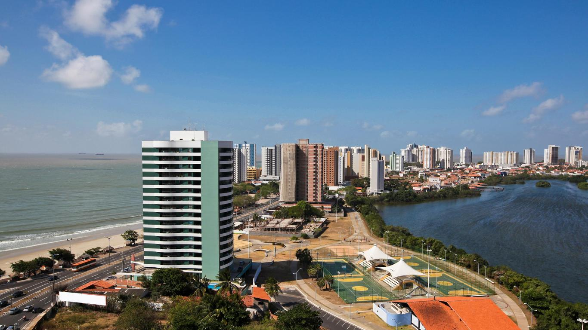

SÃO LUIS-MA
Conhecida como ILHA DO AMOR ou JAMAICA BRASILEIRA

Cidade linda com muitos pontos turístico !
1. PRAIAS AS 5 MELHORES
2. CENTRO HISTóRICO COLONIAL
Guaraná JESUS, não perca a oportunidade de provar o melhor refrigerante do país.
1. PRAIAS AS 5 MELHORES
2. CENTRO HISTóRICO COLONIAL
Guaraná JESUS, não perca a oportunidade de provar o melhor refrigerante do país.